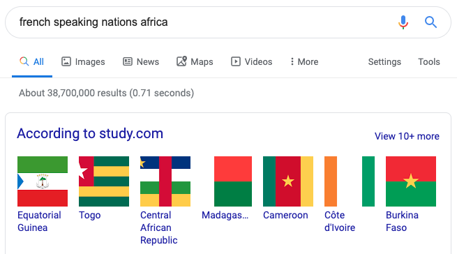

Why the World secretly needs more Arabic linguists
There is a secret conflict between Latin derived nations and the middle east, can proof can be observed through language?
Hello
Hallo
Hola
Ola
Salut - French
Hej
These are all Latin derived languages.
What I mean by this is they all use some or all of the Latin alphabet.
There is a secrect conflict between the middle east and the rest of the World.
Manufactured Conflicts
We don't think the Middle East looks at the rest of the World like most people do.
Germany may have been given misinformation regarding genetics, eugenics and evolution from a scientist backed by an another nation... particularly Egypt at the time.
So conflicts in the past may have been manufactured by the middle east.
Germany had good relations with Egypt early 1900s
Germany had good relations with Saudi Arabia 1920s
Saudi Arabia is selling sex to African Americans as a reward
Sex...
I believe the French are giving their best...